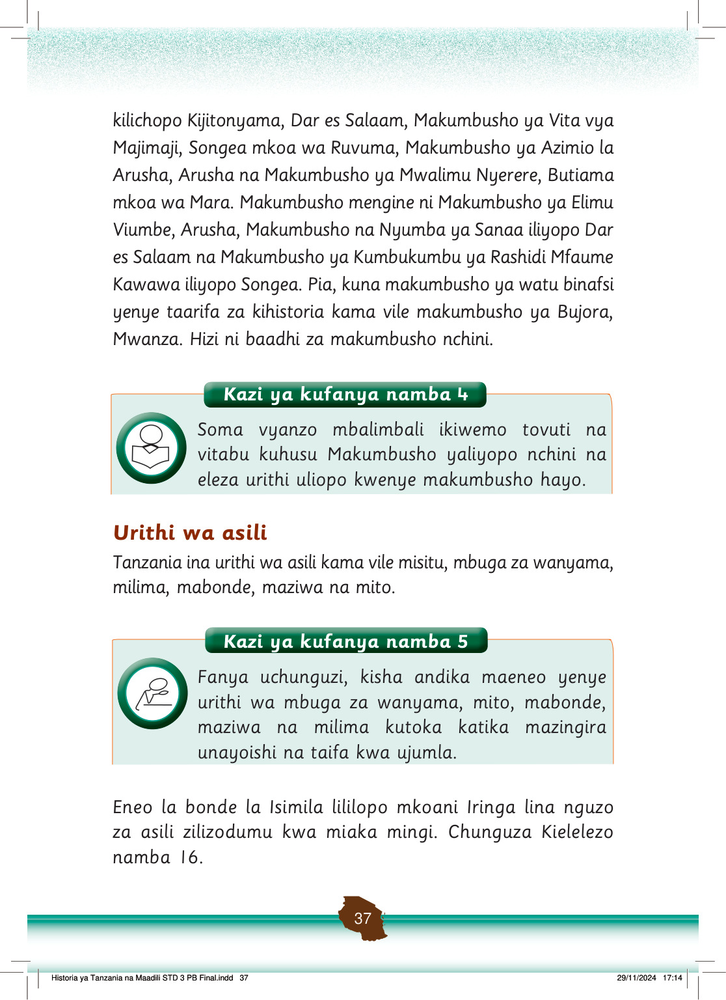

Nguzo za asili za Isimila, Iringa zimesimama kwenye eneo la wazi lenye vichaka na kilima nyuma.
Kielelezo namba 16: Nguzo za asili katika bonde la Isimila, Iringa
Pia, Tanzania ina mbuga za wanyama kama vile Serengeti, Ngorongoro, Mikumi, Tarangire, Ruaha, Mkomazi, Udzungwa, Nyerere na Manyara ambazo ni urithi wa asili uliopo nchini.
Angalia mfano katika Kielelezo namba 17.
Tembo wanne wako kwenye uwanda wa Mbuga ya Ngorongoro, mbele ya mlima mkubwa wa kijani.
Kielelezo namba 17: Mbuga ya wanyama Ngorongoro, Arusha
Hizi ni baadhi tu ya mbuga za wanyama zilizopo nchini.
Wanyama waliopo katika mbuga hizi ni urithi wa asili uliopo Tanzania.
Historia ya Tanzania na Maadili STD 3 PB Final.indd 38
29/11/2024 17:14